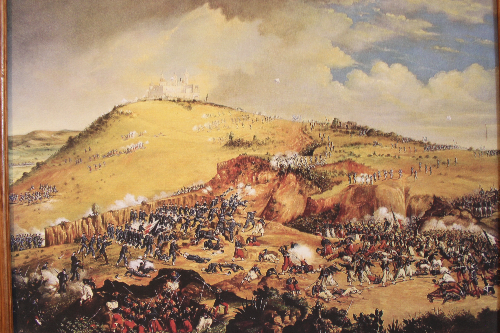
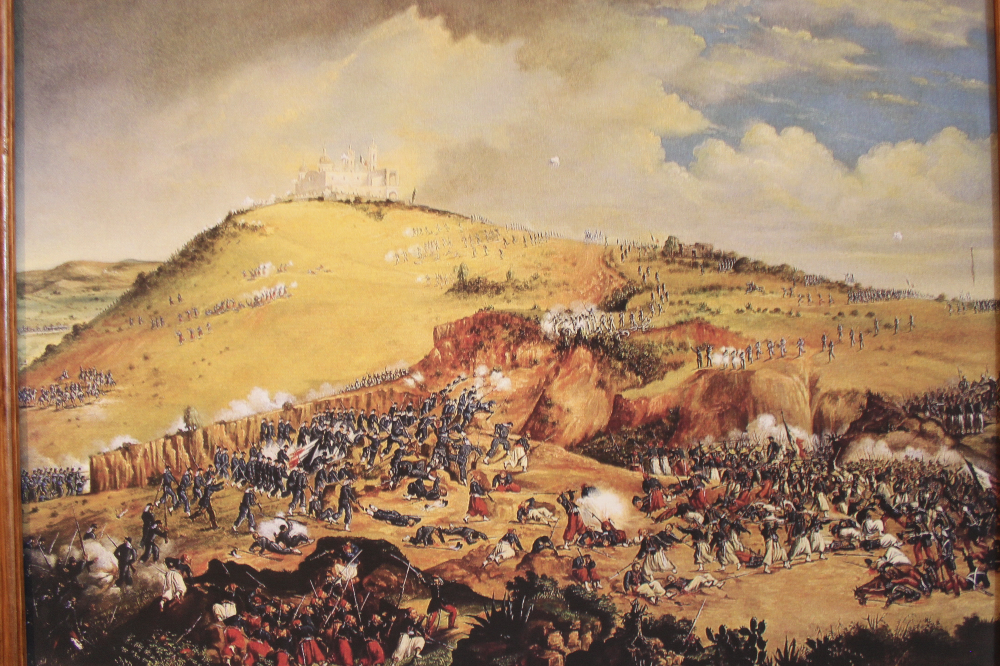

2
2 6
6 



Una de las más grandes batallas que ha librado el país tuvo lugar en la ciudad de Puebla, la batalla del 5 de mayo de 1862. En la zona de los fuertes, en el mismo escenario del pasado, se ubica el museo interactivo. El recorrido por el museo utiliza la tecnología más puntera para narrar las acciones militares y la biografía de héroes nacionales como Negrete, Díaz y Zaragoza. Pantallas táctiles, proyecciones en 3-D y contenidos interactivos descargables en dispositivos ofrecen una experiencia única al visitante.